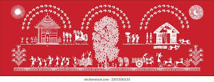
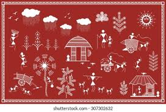

INDIAN TRADITIONAL ART-WARLI ART.

Warli painting is tribal art mostly created by the tribal people from the North Sahyadri Range in
Maharashtra, India. Warli paintings exist in cities such as Dahanu, Talasari, Jawhar, Palghar,
Mokhada, and Vikramgad of Palghar district, and originated in Maharashtra, where it is still
practiced today.
Tradition
The Warli painting tradition in Maharashtra are
among the finest examples of the folk style of paintings. The Warli tribe is one of the
largest in India, located outside Mumbai. Till the 1970s, even though the tribal style
of art is thought to date back as early as 10th century C.E.The Warli culture is
centered on the concept of Mother Nature and elements of nature are often focal points depicted
in Warli painting. Farming is their main way of life and a large source of food for the tribe.
They greatly respect nature and wildlife for the resources that they provide for life.Warli
artists use their clay huts as the backdrop for their paintings, similar to how ancient people
used cave walls as their canvases.
Jivya Soma Mashe, the artist in Thane district has played a great role in making the Warli
paintings more popular.


Painting technique
These rudimentary wall paintings use a set of basic geometric shapes: a circle, a triangle,
and a square and also a set of colours usually consisting of brown and white . These shapes are
symbolic of different elements of nature. The circle and the triangle come from their observation
of nature. The circle represents the sun and the moon, while the triangle depicts mountains and
conical trees. In contrast, the square renders to be a human invention, indicating a sacred
enclosure or a piece of land. The central motif in each ritual painting is the square, known as
the "chauk" or "chaukat", mostly of two types known as Devchauk and Lagnachauk. Inside a Devchauk
is usually a depiction of palghat, the mother goddess, symbolizing fraternity.
Male gods are unusual among the Warli and are frequently related to spirits which have taken
human shape. The central motif in the ritual painting is surrounded by scenes portraying hunting,
fishing, and farming, and trees and animals. Festivals and dances are common scenes depicted in
the ritual paintings. People and animals are represented by two inverse triangles joined at
their tips: the upper triangle depicts the torso and the lower triangle the pelvis. Their
precarious equilibrium symbolizes the balance of the universe. The representation also has
the practical and amusing advantage of animating the bodies. Another main theme of Warli art
is the denotation of a triangle that is larger at the top, representing a man; and a triangle
which is wider at the bottom, representing a woman.[better source needed] Apart from
ritualistic paintings, other Warli paintings covered day-to-day activities of the village
people.
Styles
One of the central aspects depicted in many Warli paintings is the tarpa dance. The tarpa, a
trumpet-like instrument, is played in turns by different village men. Men and women entwine
their hands and move in a circle around the tarpa player. The dancers then follow him, turning
and moving as he turns, never turning their backs to the tarpa. The musician plays two different
notes, which direct the head dancer to either move clockwise or counterclockwise. The tarpa
player assumes a role similar to that of a snake charmer, and the dancers become the figurative
snake. The dancers take a long turn in the audience and try to encircle them for entertainment.
The circle formation of the dancers is also said to resemble the circle of life.
Materials used
The simple pictorial language of Warli painting is matched by a rudimentary technique. The
ritual paintings are usually created on the inside walls of village huts. The walls are made of a
mixture of branches, earth and red brick that make a red ochre background for the paintings. The
Warli only paint with a white pigment made from a mixture of rice flour and water, with gum as a
binder. A bamboo stick is chewed at the end to give it the texture of a paintbrush. Walls are
painted only to mark special occasions such as weddings, festivals or every thing harvests.
They make it with a sense that it can be seen by future generations.
In contemporary culture
The lack of regular artistic activity explains the traditional tribal sense of style for
their paintings. In the 1970s, this ritual art took a radical turn when Jivya Soma Mashe
and his son Balu Mashe started to paint. They painted not for ritual purposes, but
because of their artistic pursuits. Jivya is known as the modern father of Warli
painting. Since the 1970s, Warli painting has moved onto paper and canvas.
Coca-Cola India launched a campaign featuring Warli painting in order to highlight the
ancient culture and represent a sense of togetherness. The campaign was called "Come Home
on Deepawali" and specifically targeted the modern youth.The campaign included
advertising on traditional mass media, combined with radio, the Internet, and out-of-home
media.
The Manik Public School at Maniknagar, Karnataka, dedicated a large wall of their
academic block to preserve Indian heritage by hosting India's largest Warli art painting.
Famous Warli artist Avanti Sandeep Kulkarni designed and hand-painted the school's
vision, values, and activities using the Warli culture and themes. Sections of painting
were dedicated to showcasing Warli traditions. The India Book of Records recognized
the record.
Traditional knowledge and intellectual property
Warli Painting is traditional knowledge and cultural intellectual property preserved
across generations. Understanding the urgent need for intellectual property rights, the tribal
non-governmental organization Adivasi Yuva Seva Sangh helped to register Warli painting
with a geographical indication under the intellectual property rights act.Various efforts
are in progress for strengthening sustainable economy of the Warli with social entrepreneurship.
Gallery